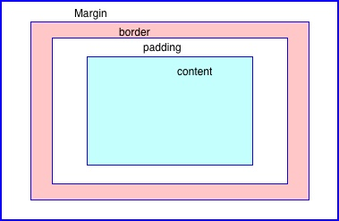

Structure, Phrasing and Display
Block and inline elements are two different display values in HTML. Block element starts a new line in the code and takes up the whole line. Block element can be a div or p tag.
Inline elements do not take up a whole line, just as much space as it needs.
For example, if you add a background to an a tag it will only cover the letters in the tag unless you change the display in css to block.
CSS can change the display of these tags if it doesn't look how you want. The display options are none, inline, block, and inline-block.
Inline will display like an inline element, block like a block element. Inline-block is different because it will display like a inline element but you can change the height and width values. And none will remove any display elements.
Box Model
The Box model in CSS is a way of viewing the elements you display. Everything you put on the page is encased in a box. The padding, border, and margins are other boxes around your content that can change the position of the content on the page. Margin and padding are invisible but border is not. Margin and padding may be similar but the postion of them is different, padding is inside the border while margins is outside.
When box sizing is added to the box model, it will add the padding and border to the height and width. So if two boxes have the same height and width, they will appear the same even if they have different padding.

Background Images
Using background image and img have different purposes. Background image will load slower since it has to wait for the css style page to load first. It is better to use background image if the image is not vital to the information you page is giving. It is also easier for people to download or print an image if it is put as img so adding it as img can be useful if the information is something you want the viewer to really look at.